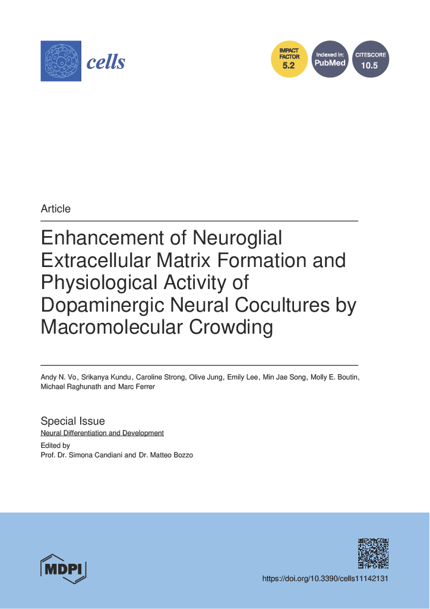
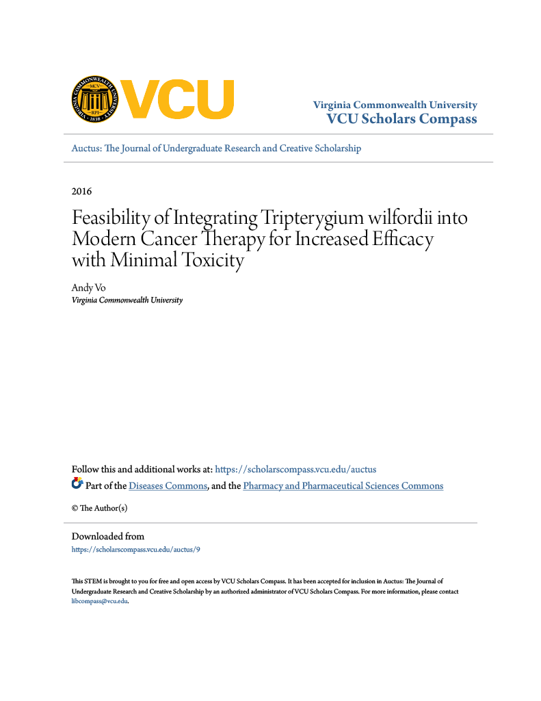

Portfolio
Technical Skills
- Cell culture: immortalized, primary, stem cells, and iPSCs-derived cells (including neurons) (2D); bioprinting, spheroid cultures (3D)
- Molecular biology: PCR, ELISA, flow cytometry, immunohistochemistry, immunocytochemistry, imaging assays (live/dead, calcium flux)
- Programming: MATLAB, Python, R
- Other software: ImageJ, SolidWorks
Publications
|  |
Vo, A. N., Kundu, S.,* Strong, C., Jung, O., Lee, E., Song, M. J., Boutin, M. E., Raghunath, M., & Ferrer, M. (2022). Enhancement of Neuroglial Extracellular Matrix Formation and Physiological Activity of Dopaminergic Neural Cocultures by Macromolecular Crowding. Cells, 11(14), 2131. doi: 10.3390/cells11142131 (*co-author)
Abstract
The neuroglial extracellular matrix (ECM) provides critical support and physiological cues for the proper growth, differentiation, and function of neuronal cells in the brain. However, in most in vitro settings that study neural physiology, cells are grown as monolayers on stiff surfaces that maximize adhesion and proliferation, and, therefore, they lack the physiological cues that ECM in native neuronal tissues provides. Macromolecular crowding (MMC) is a biophysical phenomenon based on the principle of excluded volume that can be harnessed to induce native ECM deposition by cells in culture. Here, we show that MMC using two species of Ficoll with vitamin C supplementation significantly boosts deposition of relevant brain ECM by cultured human astrocytes. Dopaminergic neurons cocultured on this astrocyte–ECM bed prepared under MMC treatment showed longer and denser neuronal extensions, a higher number of pre ad post synaptic contacts, and increased physiological activity, as evidenced by higher frequency calcium oscillation, compared to standard coculture conditions. When the pharmacological activity of various compounds was tested on MMC-treated cocultures, their responses were enhanced, and for apomorphine, a D2-receptor agonist, it was inverted in comparison to control cell culture conditions, thus emulating responses observed in in vivo settings. These results indicate that macromolecular crowding can harness the ECM-building potential of human astrocytes in vitro forming an ultra-flat 3D microenvironment that makes neural cultures more physiological and pharmacological relevant. |
|  |
Vo, A. (2016). Feasibility of integrating Tripterygium wilfordii into modern cancer therapy for increased efficacy with minimal toxicity. AUCTUS – VCU’s Journal of Undergraduate Research and Creativity. https://scholarscompass.vcu.edu/auctus/9/
Abstract
Cancer is the second leading cause of death in the U.S., and millions of novel cancer cases are being diagnosed each year. While chemotherapy and ionizing radiation are effective treatments against these malignant tumors, the adverse effects that accompany such treatments are devastating. In order to find alternative treatment methods with less side effects, we turn to Eastern herbal medicine. Recent scientific research has found that Tripterygium wilfordii, an herbal medicine traditionally used to treat inflammation in China, contains compounds (triptolide and celastrol) that prevent the growth of solid tumors, induce apoptosis, and prevent metastasis of developed tumors. Investigations on these compounds on various cancer cells lines (in vitro and in vivo) have revealed insight into their mechanism, mode of action, and toxicity. In order to circumvent the potentially fatal side effects of triptolide and celastrol, it was proposed that roots of T. wilfordii, from which the compounds are extracted, be used as a treatment for cancer. Methods for testing the efficacy and toxicity of the roots on the different cell lines previously studied are outlined in this paper. If the results from the proposed experiment conflict with expectation, then future studies on combination drugs using triptolide and celastrol with other non-bioactive compounds within the roots should be done to develop new anti-cancer drugs with low toxicity. |
Posters & Presentations
Vo, A.N., Kundu, S., Song, M.J., Lee, E., Raghunath, M., Boutin, M., Ferrer, M. Extracellular matrix induced by macromolecular crowding enhances neuronal activity. NIH Postbaccalaureate Poster Day 2020, Bethesda, MD, May 2020. (Virtual Poster)
Vo, A.N., Kundu, S., Tung, Y.T., Jung, O., Song, M.J., Boutin, M., Ferrer, M. Engineered 3D neural tissue models for drug screening. SfN Neuroscience 2019, Chicago, IL, October 2019. (Poster)
Vo, A.N., Boutin, M., Ferrer, M. Development of 3D Neural Culture Model and Optimization of Functional Assays. NIH Postbaccalaureate Poster Day 2019, Bethesda, MD, May 2019. (Poster)
Cotman, G., Ritchie, A., Vo, A., Waldo, R. Greater Reach Biopsy. BMES 2018 Undergraduate Design Competition Finalists, Atlanta, GA, October 2018. (Presentation)
Cotman, G., Ritchie, A., Vo, A., Waldo, R. Pulmonary Nodule Fine-Needle Aspiration Biopsy Device Handle. VCU College of Engineering Capstone Senior Design Expo 2018, Richmond, VA, April 2018. (Poster)
Vo, A., Hotchkiss, K., Olivares-Navarrete, R. Importance of Podosome Formation on Macrophage-Implant Interaction. 2017 BMES Annual Meeting, Phoenix, AZ, October 2017. (Poster)
Vo, A. Feasibility of Integrating T. wilfordii into Modern Cancer Therapy for Increased Efficacy and Minimal Toxicity. VCU Undergraduate Research Opportunities Program 7th Annual Poster Symposium, Richmond, VA, April 2015. (Poster)